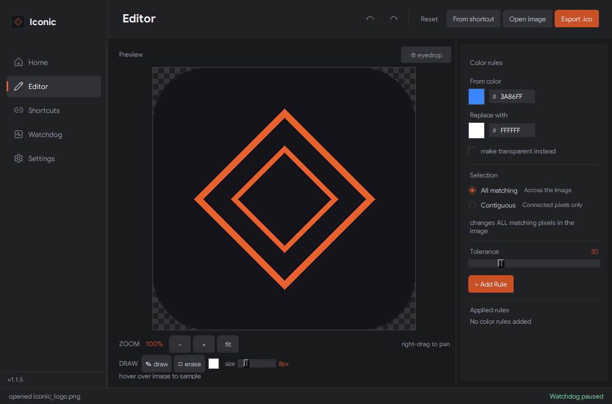

Edit the icon
Sample colors with the eyedropper, replace matching pixels, or fill a connected region. Zoom in to draw and erase, then export a multi-resolution .ico file.
Windows icon manager
Edit an icon, apply it to a shortcut, and keep it from resetting when the app updates.
Download for Windows v1.1.5 · Windows 10 & 11 · Free
Everything stays in one app, from the first color change to the next app update.
Sample colors with the eyedropper, replace matching pixels, or fill a connected region. Zoom in to draw and erase, then export a multi-resolution .ico file.
Choose a desktop shortcut and preview its current icon. Use your own image, or create a shortcut for a Microsoft Store app.
Watchdog checks managed shortcuts at your chosen interval and restores their icons if an update changes them. It can keep running in the system tray.
Before & after
A set of custom icons can make the desktop feel a little more consistent.
Move the slider to compare the original and custom icons.
The walkthrough shows an earlier version of Iconic.


Use an icon you already have, or edit one in Iconic.
Open Shortcuts and select an app from your desktop, or browse for a shortcut file.
Pick a custom image. For color changes, open the Editor and export your finished icon.
Apply the icon, then enable Watchdog tracking to restore it after updates. Set the check interval and startup preference in Watchdog.
Run the installer and follow the setup steps. It includes a Start Menu shortcut and an uninstaller.
Improved icon change detection, startup support, icon cache refresh, and minimize to tray.
Zoom and pan, drawing and erasing, and undo and redo in the editor.
Initial release with the color editor, shortcut manager, and Watchdog.